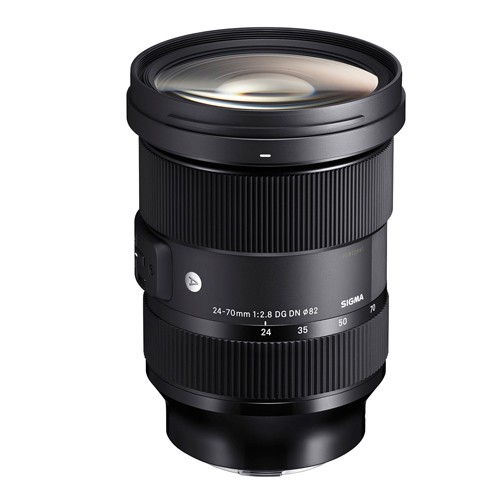
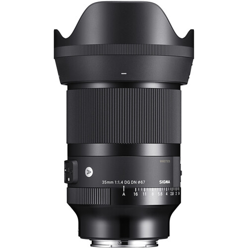
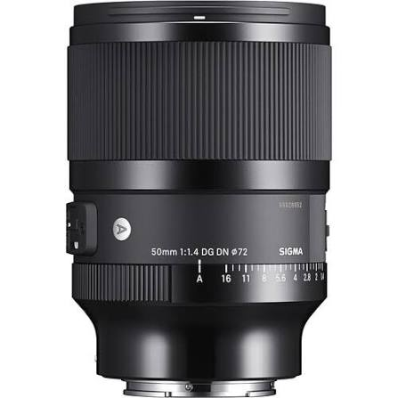
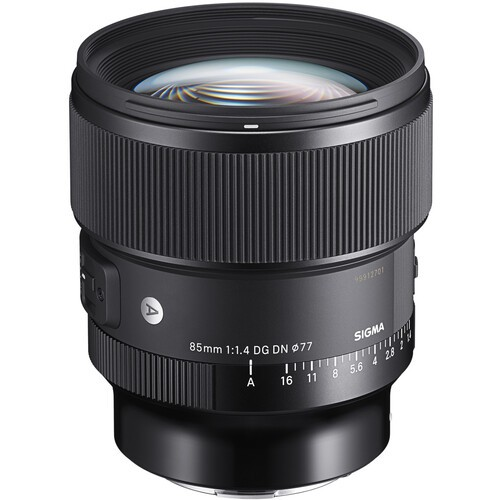

Sigma 24–70mm f/2.8 DG DN II Art

Это второе поколение флагманского стандартного зум-объектива компании Sigma. Диапазон 24–70 мм делает его универсальным вариантом для фото и видеосъемки.

Это второе поколение флагманского стандартного зум-объектива компании Sigma. Диапазон 24–70 мм делает его универсальным вариантом для фото и видеосъемки.

Это светосильный широкоугольный объектив премиум-класса для полнокадровых беззеркальных камер.

Это высококлассный светосильный «полтинник», разработанный для полнокадровых беззеркальных камер.

Это светосильный портретный объектив профессионального уровня с высокой резкостью и выраженным размытием фона.
| Объектив | Цена за сутки |
|---|---|
| Sigma 24–70mm f/2.8 DG DN II Art | 9 000 ₸ |
| Sigma 35mm f/1.4 DG DN Art | 7 000 ₸ |
| Sigma 50mm f/1.4 DG DN Art | 7 000 ₸ |
| Sigma 85mm f/1.4 DG DN Art | 7 000 ₸ |